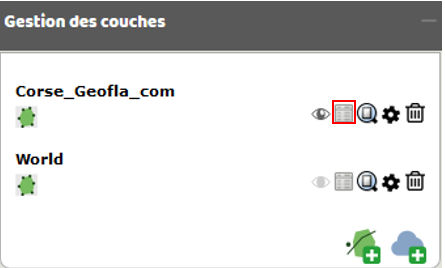
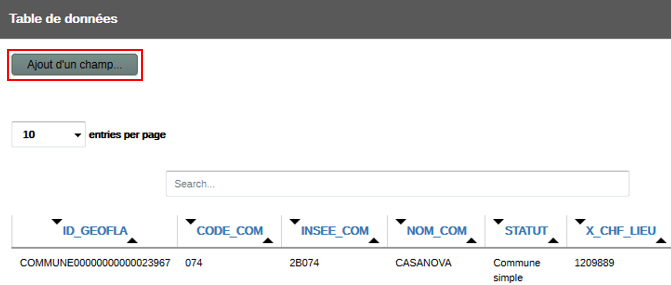
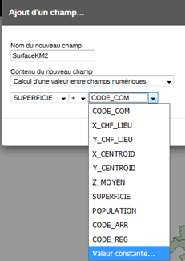
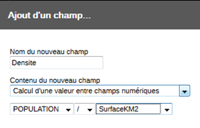
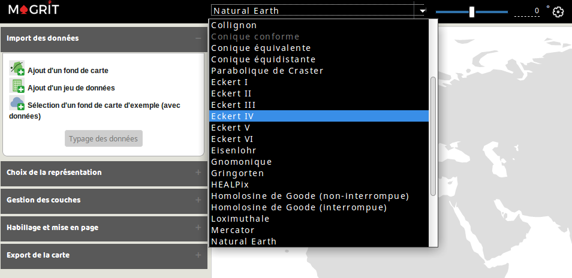
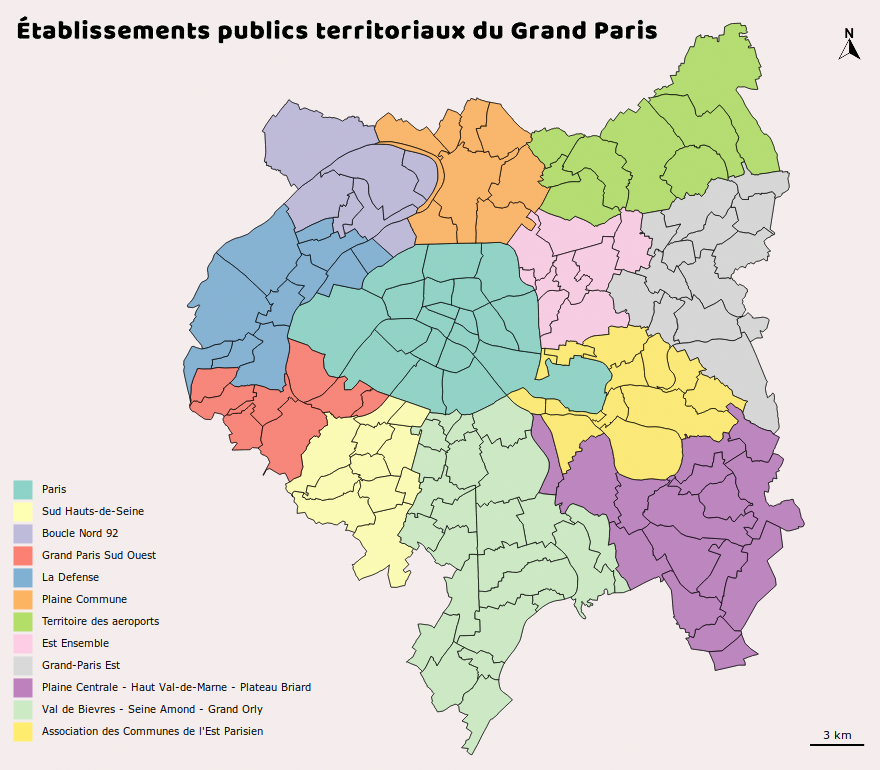
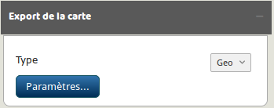

Import et manipulation des données
Deux éléments fondamentaux servent de point de départ à la réalisation d'une carte dans Magrit : le fond de carte et les données qui y sont associées. De larges possibilités sont offertes à l'utilisateur concernant l'ajout de ces deux éléments.

Import du fond de carte
L'import du fond de carte principal peut se faire de différentes manières :
- Par un clic sur le bouton Ajout d'un fond de carte.
- Par un glisser-déposer dans la zone de la carte.
Plusieurs formats sont supportés:
ShapefileGeoJSONTopoJSONkmlgmlcsv(contenant des colonnes x/y)
Note: La plupart des formats permettent de spécifier un système de coordonnées de référence; cette indication est ici obligatoire pour ouvrir correctement le fichier (présence du fichier
.prjpour le format ShapeFile par exemple) Si aucun système de coordonnées de référence n'est spécifié, l'application considère qu'il s'agit de coordonnées géographiques. Les spécifications des formats KML et GeoJSON imposent l'utilisation de coordonnées géographiques (EPSG:4326 / urn:ogc:def:crs:OGC::CRS84 )
Import d'un tableau de données
L'ajout d'un tableau de données peut être effectué de plusieurs manières :
- Par un clic sur le bouton Ajout d'un jeu de données
- Par un glisser-déposer du fichier dans le menu d'import des données
Plusieurs format sont pris en charge pour l'import des données :
csv(champs séparés par une virgule ou par un point virgule)tsv(champs séparés par une tabulation)xls,xlsxetods(à condition que la feuille à utiliser soit la première du document et contienne seulement la table de données).
La table de données importée à cette étape peut avoir deux utilités :
- effectuer une jointure pour enrichir le fond de carte à utiliser
- servir de référence pour la création d'une carte de liens (il n'est dans ce cas pas nécessaire d'effectuer une jointure)
Jointure des données
Lorsqu'un fond de carte et un jeu de données externes ont été ajoutés, il devient possible d'associer le fond de carte et ce jeu de données. Cette association est possible grâce à la correspondance entre les valeurs d'identifiants se trouvant dans le fond de carte et celles se trouvant dans la table de données.
Cette opération est appelée "jointure" (c'est également le cas dans les logiciels SIG ou les systèmes de gestion de bases de données) et s'effectue ici simplement en choisissant le nom de la colonne contenant des valeurs d'identifiants dans le jeu de données et dans le fond de carte.
Pour assurer le bon fonctionnement de cette méthode, les valeurs prisent par les identifiants , d'une part pour le fond de carte et d'autre part pour le jeu de données externe, doivent être uniques.

Apparence de l'élément avant jointure
Apparence de l'élément après jointure des champs
Exemple des valeurs attributaires du fond de carte (avant jointure) :
| Id | Nom |
|---|---|
| BE | Belgique |
| DE | Allemagne |
| LU | Luxembourg |
| FR | France |
| GB | Grande-Bretagne |
Exemple des valeurs attributaires du jeu de données externe :
| ISO2 | JAMESBOND_VISITES | POP_DENSITY |
|---|---|---|
| FR | 4 | 117.6 |
| LU | 0 | 218.9 |
| DE | 2 | 231.5 |
| GB | 22 | 267.5 |
| BE | 0 | 373.1 |
Exemple des valeurs attributaires du fond de carte (après jointure avec le jeu de données externe, en utilisant respectivement les champs Id et ISO2) :
| Id | Nom | ISO2 | JAMESBOND_VISITES | POP_DENSITY |
|---|---|---|---|---|
| BE | Belgique | BE | 0 | 373.1 |
| DE | Allemagne | DE | 2 | 231.5 |
| LU | Luxembourg | LU | 0 | 218.9 |
| FR | France | FR | 4 | 117.6 |
| GB | Grande-Bretagne | GB | 22 | 267.5 |
Typage des données
À chaque type de données est associé un certain nombre de modes de représentation possibles. Une fois les données importées il est donc important de définir le type de chacune des variables à cartographier.
5 types de données sont possibles :
- Identifiant (champs notamment utilisés pour joindre les données)
- Stock
- Ratio
- Catégorie
- Inconnu (champs non cartographiables)
Stock
Les variables quantitatives de stock expriment des quantités concrètes et leur somme ont un sens (nombre de chômeurs, population totale, par exemple). La représentation de ce type de phénomènes doit respecter l’expression de ces quantités et les différences de proportionnalité entre les différents éléments qui en découlent. Exemples : Population totale en milliers d'habitants, Superficie en hectares.
Ratios
Les variables quantitatives de taux, ou ratios, expriment un rapport entre deux quantités dont la somme n’a pas de signification. Par extension, on peut y associer les indicateurs composites numériques associant plusieurs indicateurs (indices…). Exemples : PIB par habitant, Indicateur de développement humain.
Catégories
Les modalités des caractères qualitatifs ne sont pas mesurables, ce sont des noms, des sigles ou des codes. On ne peut sommer des modalités qualitatives, on ne peut en calculer la moyenne. Exemples : Noms des départements, Type d'occupation du sol.
Identifiant
Ce champ contient des valeurs permettant d'identifier de manière unique chacune des entités de la couche de données.
Ces sont ces champs qui sont utilisés pour effectuer une jointure de données.
Les valeurs de ces champs sont également transférées aux entités correspondantes dans les représentations qui le permettent (symboles proportionnels, cartogrammes, cartes choroplèthes, cartes qualitatives par à-plat de couleurs ou par utilisation de pictogrammes).
Exemple: Code INSEE de la commune, Code ISO2 d'un pays.

Affichage et enrichissement des tables de données
L'affichage des tableaux de données correspondant à chacune des couches ajoutées (ou obtenues en résultat d'un type de représentation) est possible via le gestionnaire de couche et le bouton représentant une table de données.

Il est également possible d'enrichir la table de données par l'ajout de nouveaux champs. Les valeurs d'un nouveau champ ne peuvent pas être saisies manuellement mais seulement créées à partir de valeurs existantes. La mise en situation suivante décrit la création successive de deux champs en utilisant des données de superficie et de population.
Dans l'onglet "Gestion des couches" j'ouvre la table attributaire et je clique sur "ajout d'un champ":
 
La fenêtre qui s'ouvre permet de saisir le nom du nouveau champ puis d'indiquer le type d'opération à réaliser (sur champ de type numérique ou non numérique).
Pour convertir des hectares en kilomètres carrés il nous faut diviser les valeurs de superficie par 100. Il existe une option "valeur constante" disponible au terme de la liste des noms de champs contenus dans la table :

Une nouvelle colonne a bien été ajoutée à la table attributaire :
Nous pouvons ensuite calculer la densité de population en km² en créant un nouveau champ :



Projections
De nombreuses projections cartographiques particulièrement adaptée à des échelles régionales ou globales sont disponibles dans l'application.
La sélection d'une de ces projections s'effectue dans la partie supérieure de la fenêtre.

Quelques projections courantes sont proposées directement à l'utilisateur via ce menu. Ce menu permet également d'accéder à des options de personnalisation plus avancées :
- Choix d'une projection parmi les 60 proposées par l'application.
- Rotation sur les axes lambda, phi et gamma.
Plusieurs attributs permettent de distinguer ces projections :
- la conservation locale des surfaces (ces projections sont dites équivalentes, c'est par exemple le cas de la projection azimutale équivalente de Lambert)
- la conservation locale des angles (ces projections conservent les formes et sont dites conformes, c'est par exemple le cas de la projection Mercator)
- la représentation du globe sous une forme interrompue (projection HEALPix et projection de Goode par exemple)

Selon l'échelle d'affichage de la carte et la déformation appliquée par la projection, la présence d'un figuré indiquant le nord peut ne pas s'avérer pertinente.
Il est toutefois possible d'ajouter une couche représentant le tracé des lignes de latitude et de longitude (cette couche d'informations est ici appelé "graticule" et est disponible dans la section "ajout d'éléments d'habillage"). Cette couche d'information permet une bonne visualisation des déformations apportées par les différentes projections.
Il est également possible (et conseillé lors de l'utilisation des projections dites "interrompues") d'ajouter une couche d'informations représentant les limites du globe selon le découpage appliqué par la projection.
Note:
- La modification de la projection à utiliser est possible à tout moment.
- Lors de la réalisation d'une carte d'une faible emprise spatiale, l'utilisation de certaines projections n'est pas pertinent.
Exemple d'utilisation des graticules et du fond de l'emprise du globe avec des représentations originales :
 Projection Loximuthale
Projection Loximuthale
 Projection HEALPix
Projection HEALPix
 Projection homolosine de Goode (interrompue)
Projection homolosine de Goode (interrompue)
 Projection quinconciale de Peirce
Projection quinconciale de Peirce
 Projection de Eisenlohr
Projection de Eisenlohr
L'application propose également d'utiliser une projection et un système de coordonnées personnalisées et pouvant être obtenus en saisissant la chaîne de caractère au format Proj.41 correspondante. La saisie du contenu du fichier .prj (au format ESRI WKT) est aussi possible. L'utilisation d'une projection personnalisée de ce type n'est pas compatible avec l'ajout du fond de l'emprise du globe. Celui-ci est ainsi automatiquement désactivé lors du basculement vers une projection de ce type. Cette fonctionnalité, qui supporte également les transformations géodésiques, permet d'utiliser la projection et le système de coordonnées les plus adaptés à la zone à cartographier selon les besoins de l'usager. Ainsi, après avoir ajouté une couche géographique de la France, il est possible d'obtenir la projection RGF93 / Lambert-93 en saisissant la chaîne de caractère (format Proj.4 string)
+proj=lcc +lat_1=44 +lat_2=49 +lat_0=46.5 +lon_0=3 +x_0=700000
+y_0=6600000 +ellps=GRS80 +units=m +no_defs
ou la chaîne de caractère (format ESRI WKT)
PROJCS["RGF93_Lambert_93",GEOGCS["GCS_RGF_1993",DATUM["D_RGF_1993",SPHEROID["GRS_1980",6378137.0,298.257222101]],
PRIMEM["Greenwich",0.0],UNIT["Degree",0.017453292519943295]],
PROJECTION["Lambert_Conformal_Conic"],PARAMETER["False_Easting",700000.0],PARAMETER["False_Northing",6600000.0],PARAMETER["Central_Meridian",3.0],
PARAMETER["Standard_Parallel_1",44.0],PARAMETER["Standard_Parallel_2",49.0],PARAMETER["Latitude_Of_Origin",46.5],UNIT["Meter",1.0]]
Différents moyens permettent de trouver le système de coordonnées de référence adapté à la zone que l'on souhaite cartographier.
- Utilisation du service http://projest.io/ns (suggestion de projections à partir de l'emprise de la zone à cartographier).
- Utilisation d'une des projections d'emprise nationale suggérée à partir d'une liste maintenue en parallèle de Magrit.
- Recherche sur le site http://epsg.io (les deux options précédentes reposent sur ces données)
De plus l'application propose automatiquement l'utilisation de la projection fournit avec le jeux de données de l'utilisateur lorsque celui-ci contient des informations sur le projection à utiliser (Shapefile, GML).
Liste indicative de projections adaptées à un pays donné :
| Emprise | Nom de la projection | proj4 | url |
|---|---|---|---|
| Albanie | Gauss-Kruger zone 4 | +proj=tmerc +lat_0=0 +lon_0=21 +k=1 +x_0=4500000 +y_0=0 +ellps=krass +towgs84=-44.183,-0.58,-38.489,-2.3867,-2.7072,3.5196,-8.2703 +units=m +no_defs | https://epsg.io/2462 |
| Samoa américaines | American Samoa Lambert | +proj=lcc +lat_1=-14.26666666666667 +lat_0=-14.26666666666667 +lon_0=-170 +k_0=1 +x_0=152400.3048006096 +y_0=95169.31165862332 +ellps=clrk66 +towgs84=-115,118,426,0,0,0,0 +units=us-ft +no_defs | https://epsg.io/3102 |
| Samoa américaines | UTM zone 2S | +proj=utm +zone=2 +south +ellps=GRS80 +towgs84=0,0,0,0,0,0,0 +units=m +no_defs | https://epsg.io/2195 |
| Anguilla | British West Indies Grid | +proj=tmerc +lat_0=0 +lon_0=-62 +k=0.9995000000000001 +x_0=400000 +y_0=0 +ellps=clrk80 +units=m +no_defs | https://epsg.io/2000 |
| Antigua | British West Indies Grid | +proj=tmerc +lat_0=0 +lon_0=-62 +k=0.9995000000000001 +x_0=400000 +y_0=0 +ellps=clrk80 +towgs84=-255,-15,71,0,0,0,0 +units=m +no_defs | https://epsg.io/2001 |
| Aruba | UTM zone 19N | +proj=utm +zone=19 +ellps=intl +towgs84=-288,175,-376,0,0,0,0 +units=m +no_defs | https://epsg.io/24819 |
| Australie | Geoscience Australia Lambert | +proj=lcc +lat_1=-18 +lat_2=-36 +lat_0=0 +lon_0=134 +x_0=0 +y_0=0 +ellps=GRS80 +towgs84=0,0,0,0,0,0,0 +units=m +no_defs | https://epsg.io/3112 |
| Australie | Australian Albers | +proj=aea +lat_1=-18 +lat_2=-36 +lat_0=0 +lon_0=132 +x_0=0 +y_0=0 +ellps=GRS80 +towgs84=0,0,0,0,0,0,0 +units=m +no_defs | https://epsg.io/3577 |
| Autriche | Austria Lambert | +proj=lcc +lat_1=49 +lat_2=46 +lat_0=47.5 +lon_0=13.33333333333333 +x_0=400000 +y_0=400000 +ellps=GRS80 +towgs84=0,0,0,0,0,0,0 +units=m +no_defs | https://epsg.io/3416 |
| Bahreïn | Bahrain Grid | +proj=utm +zone=39 +ellps=intl +towgs84=-143,-236,7,0,0,0,0 +units=m +no_defs | https://epsg.io/20499 |
| Pays baltes | TM Baltic 93 | +proj=tmerc +lat_0=0 +lon_0=24 +k=0.9996 +x_0=500000 +y_0=0 +ellps=GRS80 +towgs84=0,0,0,0,0,0,0 +units=m +no_defs | https://epsg.io/25884 |
| Bangladesh | Bangladesh TM | +proj=tmerc +lat_0=0 +lon_0=90 +k=0.9996 +x_0=500000 +y_0=0 +a=6377276.345 +b=6356075.41314024 +towgs84=283.7,735.9,261.1,0,0,0,0 +units=m +no_defs | https://epsg.io/3106 |
| Bangladesh | India zone Iib | +proj=lcc +lat_1=26 +lat_0=26 +lon_0=90 +k_0=0.99878641 +x_0=2743185.69 +y_0=914395.23 +a=6377276.345 +b=6356075.41314024 +towgs84=214,804,268,0,0,0,0 +units=m +no_defs | https://epsg.io/24375 |
| Barbade | Barbados National Grid | +proj=tmerc +lat_0=13.17638888888889 +lon_0=-59.55972222222222 +k=0.9999986 +x_0=30000 +y_0=75000 +ellps=clrk80 +towgs84=31.95,300.99,419.19,0,0,0,0 +units=m +no_defs | https://epsg.io/21292 |
| Belgique | Belgian Lambert 2008 | +proj=lcc +lat_1=49.83333333333334 +lat_2=51.16666666666666 +lat_0=50.797815 +lon_0=4.359215833333333 +x_0=649328 +y_0=665262 +ellps=GRS80 +towgs84=0,0,0,0,0,0,0 +units=m +no_defs | https://epsg.io/3812 |
| Belgique | Belgian Lambert 72 | +proj=lcc +lat_1=51.16666723333333 +lat_2=49.8333339 +lat_0=90 +lon_0=4.367486666666666 +x_0=150000.013 +y_0=5400088.438 +ellps=intl +towgs84=-106.8686,52.2978,-103.7239,0.3366,-0.457,1.8422,-1.2747 +units=m +no_defs | https://epsg.io/31370 |
| Bélize | Colony Grid | +proj=tmerc +lat_0=17.06124194444444 +lon_0=-88.6318575 +k=1 +x_0=66220.02833082761 +y_0=135779.5099885299 +a=6378293.645208759 +b=6356617.987679838 +to_meter=0.3047972654 +no_defs | https://epsg.io/5589 |
| Bénin | UTM zone 31N | +proj=utm +zone=31 +datum=WGS84 +units=m +no_defs | https://epsg.io/32631 |
| Bermudes | Bermuda 2000 National Grid | +proj=tmerc +lat_0=32 +lon_0=-64.75 +k=1 +x_0=550000 +y_0=100000 +ellps=WGS84 +towgs84=0,0,0,0,0,0,0 +units=m +no_defs | https://epsg.io/3770 |
| Bhoutan | Bhutan National Grid | +proj=tmerc +lat_0=0 +lon_0=90 +k=1 +x_0=250000 +y_0=0 +ellps=GRS80 +towgs84=0,0,0,0,0,0,0 +units=m +no_defs | https://epsg.io/5266 |
| Brésil | Brazil Polyconic | +proj=poly +lat_0=0 +lon_0=-54 +x_0=5000000 +y_0=10000000 +ellps=aust_SA +towgs84=-67.35,3.88,-38.22,0,0,0,0 +units=m +no_defs | https://epsg.io/5530 |
| Iles Vierges britanniques | UTM zone 20N | +proj=utm +zone=20 +ellps=clrk66 +towgs84=11,72,-101,0,0,0,0 +units=m +no_defs | https://epsg.io/3920 |
| Brunei | Brunei BRSO | +proj=omerc +lat_0=4 +lonc=115 +alpha=53.31580995 +k=0.99984 +x_0=0 +y_0=0 +no_uoff +gamma=53.13010236111111 +ellps=GRS80 +towgs84=0,0,0,0,0,0,0 +units=m +no_defs | https://epsg.io/5247 |
| Canada | Canada Atlas Lambert | +proj=lcc +lat_1=49 +lat_2=77 +lat_0=49 +lon_0=-95 +x_0=0 +y_0=0 +ellps=GRS80 +towgs84=0,0,0,0,0,0,0 +units=m +no_defs | https://epsg.io/3978 |
| Canada | Statistics Canada Lambert | +proj=lcc +lat_1=49 +lat_2=77 +lat_0=63.390675 +lon_0=-91.86666666666666 +x_0=6200000 +y_0=3000000 +ellps=GRS80 +towgs84=0,0,0,0,0,0,0 +units=m +no_defs | https://epsg.io/3347 |
| Cap-Vert | Cape Verde National | +proj=lcc +lat_1=15 +lat_2=16.66666666666667 +lat_0=15.83333333333333 +lon_0=-24 +x_0=161587.83 +y_0=128511.202 +datum=WGS84 +units=m +no_defs | https://epsg.io/4826 |
| Costa Rica | CRTM05 | +proj=tmerc +lat_0=0 +lon_0=-84 +k=0.9999 +x_0=500000 +y_0=0 +ellps=WGS84 +towgs84=0,0,0,0,0,0,0 +units=m +no_defs | https://epsg.io/5367 |
| Croatie | Croatia LCC | +proj=lcc +lat_1=45.91666666666666 +lat_2=43.08333333333334 +lat_0=0 +lon_0=16.5 +x_0=0 +y_0=0 +ellps=GRS80 +towgs84=0,0,0,0,0,0,0 +units=m +no_defs | https://epsg.io/3766 |
| Croatie | Croatia TM | +proj=tmerc +lat_0=0 +lon_0=16.5 +k=0.9999 +x_0=500000 +y_0=0 +ellps=GRS80 +towgs84=0,0,0,0,0,0,0 +units=m +no_defs | https://epsg.io/3765 |
| Curaçao | UTM zone 19N | +proj=utm +zone=19 +ellps=intl +towgs84=-288,175,-376,0,0,0,0 +units=m +no_defs | https://epsg.io/24819 |
| République tchèque | Krovak | +proj=krovak +lat_0=49.5 +lon_0=24.83333333333333 +alpha=30.28813972222222 +k=0.9999 +x_0=0 +y_0=0 +ellps=bessel +towgs84=589,76,480,0,0,0,0 +units=m +no_defs | https://epsg.io/5513 |
| Dominique | British West Indies Grid | +proj=tmerc +lat_0=0 +lon_0=-62 +k=0.9995000000000001 +x_0=400000 +y_0=0 +ellps=clrk80 +towgs84=725,685,536,0,0,0,0 +units=m +no_defs | https://epsg.io/2002 |
| Salvador | El Salvador Lambert | +proj=lcc +lat_1=13.78333333333333 +lat_0=13.78333333333333 +lon_0=-89 +k_0=0.99996704 +x_0=500000 +y_0=295809.184 +ellps=clrk66 +towgs84=205,96,-98,0,0,0,0 +units=m +no_defs | https://epsg.io/5460 |
| Érythrée | UTM zone 37N | +proj=utm +zone=37 +ellps=bessel +towgs84=639,405,60,0,0,0,0 +units=m +no_defs | https://epsg.io/26237 |
| Estonie | Estonian Coordinate System of 1997 | +proj=lcc +lat_1=59.33333333333334 +lat_2=58 +lat_0=57.51755393055556 +lon_0=24 +x_0=500000 +y_0=6375000 +ellps=GRS80 +towgs84=0,0,0,0,0,0,0 +units=m +no_defs | https://epsg.io/3301 |
| Iles Féroé | Faroe TM | +proj=tmerc +lat_0=0 +lon_0=-7 +k=0.999997 +x_0=200000 +y_0=-6000000 +ellps=GRS80 +towgs84=0,0,0,0,0,0,0 +units=m +no_defs | https://epsg.io/5316 |
| Fiji | Fiji Map Grid | +proj=tmerc +lat_0=-17 +lon_0=178.75 +k=0.99985 +x_0=2000000 +y_0=4000000 +ellps=WGS72 +towgs84=0,0,4.5,0,0,0.554,0.2263 +units=m +no_defs | https://epsg.io/3460 |
| Finlande | TM35FIN | +proj=utm +zone=35 +ellps=GRS80 +towgs84=0,0,0,0,0,0,0 +units=m +no_defs | https://epsg.io/3067 |
| France | Lambert 93 | +proj=lcc +lat_1=49 +lat_2=44 +lat_0=46.5 +lon_0=3 +x_0=700000 +y_0=6600000 +ellps=GRS80 +towgs84=0,0,0,0,0,0,0 +units=m +no_defs | https://epsg.io/2154 |
| Gabon | Gabon TM 2011 | +proj=tmerc +lat_0=0 +lon_0=11.5 +k=0.9996 +x_0=1500000 +y_0=5500000 +datum=WGS84 +units=m +no_defs | https://epsg.io/5523 |
| Gabon | Gabon TM | +proj=tmerc +lat_0=0 +lon_0=12 +k=0.9996 +x_0=500000 +y_0=500000 +datum=WGS84 +units=m +no_defs | https://epsg.io/5223 |
| Allemagne | LCC Germany | +proj=lcc +lat_1=48.66666666666666 +lat_2=53.66666666666666 +lat_0=51 +lon_0=10.5 +x_0=0 +y_0=0 +ellps=GRS80 +towgs84=0,0,0,0,0,0,0 +units=m +no_defs | https://epsg.io/5243 |
| Ghana | Ghana Metre Grid | +proj=tmerc +lat_0=4.666666666666667 +lon_0=-1 +k=0.99975 +x_0=274319.51 +y_0=0 +ellps=clrk80 +towgs84=-130,29,364,0,0,0,0 +units=m +no_defs | https://epsg.io/25000 |
| Grèce | Greek Grid | +proj=tmerc +lat_0=0 +lon_0=24 +k=0.9996 +x_0=500000 +y_0=0 +ellps=GRS80 +towgs84=-199.87,74.79,246.62,0,0,0,0 +units=m +no_defs | https://epsg.io/2100 |
| Groenland | EPSG Greenland Polar Stereographic | +proj=stere +lat_0=90 +lat_ts=90 +lon_0=-33 +k=0.994 +x_0=2000000 +y_0=2000000 +datum=WGS84 +units=m +no_defs | https://epsg.io/5938 |
| Grenade | British West Indies Grid | +proj=tmerc +lat_0=0 +lon_0=-62 +k=0.9995000000000001 +x_0=400000 +y_0=0 +ellps=clrk80 +towgs84=72,213.7,93,0,0,0,0 +units=m +no_defs | https://epsg.io/2003 |
| Guadeloupe | UTM zone 20N | +proj=utm +zone=20 +ellps=GRS80 +towgs84=0,0,0,0,0,0,0 +units=m +no_defs | https://epsg.io/4559 |
| Guam | Guam Map Grid | +proj=tmerc +lat_0=13.5 +lon_0=144.75 +k=1 +x_0=100000 +y_0=200000 +ellps=GRS80 +towgs84=0,0,0,0,0,0,0 +units=m +no_defs | https://epsg.io/4414 |
| Guinée-Bissau | UTM zone 28N | +proj=utm +zone=28 +ellps=intl +towgs84=-173,253,27,0,0,0,0 +units=m +no_defs | https://epsg.io/2095 |
| Hong Kong | Hong Kong 1980 Grid System | +proj=tmerc +lat_0=22.31213333333334 +lon_0=114.1785555555556 +k=1 +x_0=836694.05 +y_0=819069.8 +ellps=intl +towgs84=-162.619,-276.959,-161.764,0.067753,-2.243649,-1.158827,-1.094246 +units=m +no_defs | https://epsg.io/2326 |
| Hongrie | HD72 | +proj=somerc +lat_0=47.14439372222222 +lon_0=19.04857177777778 +k_0=0.99993 +x_0=650000 +y_0=200000 +ellps=GRS67 +towgs84=52.17,-71.82,-14.9,0,0,0,0 +units=m +no_defs | https://epsg.io/23700 |
| Islande | Lambert 2004 | +proj=lcc +lat_1=64.25 +lat_2=65.75 +lat_0=65 +lon_0=-19 +x_0=1700000 +y_0=300000 +ellps=GRS80 +towgs84=0,0,0,0,0,0,0 +units=m +no_defs | https://epsg.io/5325 |
| Irak | Iraq National Grid | +proj=tmerc +lat_0=29.02626833333333 +lon_0=46.5 +k=0.9994 +x_0=800000 +y_0=0 +ellps=intl +towgs84=-87,-98,-121,0,0,0,0 +units=m +no_defs | https://epsg.io/3893 |
| Irlande | Irish TM | +proj=tmerc +lat_0=53.5 +lon_0=-8 +k=0.99982 +x_0=600000 +y_0=750000 +ellps=GRS80 +towgs84=0,0,0,0,0,0,0 +units=m +no_defs | https://epsg.io/2157 |
| Israël | Israel TM Grid | +proj=tmerc +lat_0=31.73439361111111 +lon_0=35.20451694444445 +k=1.0000067 +x_0=219529.584 +y_0=626907.39 +ellps=GRS80 +towgs84=-48,55,52,0,0,0,0 +units=m +no_defs | https://epsg.io/2039 |
| Jamaïque | Jamaica Metric Grid | +proj=lcc +lat_1=18 +lat_0=18 +lon_0=-77 +k_0=1 +x_0=750000 +y_0=650000 +ellps=WGS84 +towgs84=0,0,0,0,0,0,0 +units=m +no_defs | https://epsg.io/3448 |
| Jordanie | Jordan TM | +proj=tmerc +lat_0=0 +lon_0=37 +k=0.9998 +x_0=500000 +y_0=-3000000 +ellps=intl +towgs84=-87,-98,-121,0,0,0,0 +units=m +no_defs | https://epsg.io/3066 |
| Koweït | KOC Lambert | +proj=lcc +lat_1=32.5 +lat_0=32.5 +lon_0=45 +k_0=0.9987864078000001 +x_0=1500000 +y_0=1166200 +ellps=clrk80 +towgs84=-294.7,-200.1,525.5,0,0,0,0 +units=m +no_defs | https://epsg.io/24600 |
| Lettonie | Latvia TM | +proj=tmerc +lat_0=0 +lon_0=24 +k=0.9996 +x_0=500000 +y_0=-6000000 +ellps=GRS80 +towgs84=0,0,0,0,0,0,0 +units=m +no_defs | https://epsg.io/3059 |
| Liban | Levant Stereographic | +proj=sterea +lat_0=34.2 +lon_0=39.15 +k=0.9995341 +x_0=0 +y_0=0 +a=6378249.2 +b=6356515 +towgs84=-190.421,8.532,238.69,0,0,0,0 +units=m +no_defs | https://epsg.io/22780 |
| Liban | Syria Lambert | +proj=lcc +lat_1=34.65 +lat_0=34.65 +lon_0=37.35 +k_0=0.9996256 +x_0=300000 +y_0=300000 +a=6378249.2 +b=6356515 +towgs84=-190.421,8.532,238.69,0,0,0,0 +units=m +no_defs | https://epsg.io/22770 |
| Lybie | Libya TM | +proj=tmerc +lat_0=0 +lon_0=17 +k=0.9965000000000001 +x_0=1000000 +y_0=0 +ellps=intl +towgs84=-208.4058,-109.8777,-2.5764,0,0,0,0 +units=m +no_defs | https://epsg.io/3177 |
| Liechtenstein | LV95 | +proj=somerc +lat_0=46.95240555555556 +lon_0=7.439583333333333 +k_0=1 +x_0=2600000 +y_0=1200000 +ellps=bessel +towgs84=674.374,15.056,405.346,0,0,0,0 +units=m +no_defs | https://epsg.io/2056 |
| Lituanie | Lithuania TM | +proj=tmerc +lat_0=0 +lon_0=24 +k=0.9998 +x_0=500000 +y_0=0 +ellps=GRS80 +towgs84=0,0,0,0,0,0,0 +units=m +no_defs | https://epsg.io/3346 |
| Luxembourg | Luxembourg 1930 Gauss | +proj=tmerc +lat_0=49.83333333333334 +lon_0=6.166666666666667 +k=1 +x_0=80000 +y_0=100000 +ellps=intl +towgs84=-189.6806,18.3463,-42.7695,-0.33746,-3.09264,2.53861,0.4598 +units=m +no_defs | https://epsg.io/2169 |
| Madagascar | Laborde Grid approximation | +proj=omerc +lat_0=-18.9 +lonc=44.10000000000001 +alpha=18.9 +k=0.9995000000000001 +x_0=400000 +y_0=800000 +gamma=18.9 +ellps=intl +towgs84=-189,-242,-91,0,0,0,0 +pm=paris +units=m +no_defs | https://epsg.io/29702 |
| Madagascar | Laborde Grid | https://epsg.io/29701 | |
| Malawi | UTM zone 36S | +proj=utm +zone=36 +south +a=6378249.145 +b=6356514.966398753 +towgs84=-143,-90,-294,0,0,0,0 +units=m +no_defs | https://epsg.io/20936 |
| Martinique | UTM zone 20N | +proj=utm +zone=20 +ellps=GRS80 +towgs84=0,0,0,0,0,0,0 +units=m +no_defs | https://epsg.io/4559 |
| Moldavie | Moldova TM | +proj=tmerc +lat_0=0 +lon_0=28.4 +k=0.9999400000000001 +x_0=200000 +y_0=-5000000 +ellps=GRS80 +towgs84=0,0,0,0,0,0,0 +units=m +no_defs | https://epsg.io/4026 |
| Montserrat | British West Indies Grid | +proj=tmerc +lat_0=0 +lon_0=-62 +k=0.9995000000000001 +x_0=400000 +y_0=0 +ellps=clrk80 +towgs84=174,359,365,0,0,0,0 +units=m +no_defs | https://epsg.io/2004 |
| Pays-Bas | RD New | +proj=sterea +lat_0=52.15616055555555 +lon_0=5.38763888888889 +k=0.9999079 +x_0=155000 +y_0=463000 +ellps=bessel +towgs84=565.4171,50.3319,465.5524,-0.398957,0.343988,-1.87740,4.0725 +units=m +no_defs | https://epsg.io/28992 |
| Nouvelle-Calédonie | Lambert New Caledonia | +proj=lcc +lat_1=-20.66666666666667 +lat_2=-22.33333333333333 +lat_0=-21.5 +lon_0=166 +x_0=400000 +y_0=300000 +ellps=GRS80 +towgs84=0,0,0,0,0,0,0 +units=m +no_defs | https://epsg.io/3163 |
| Nouvelle-Zélande | NZGS2000 | +proj=lcc +lat_1=-37.5 +lat_2=-44.5 +lat_0=-41 +lon_0=173 +x_0=3000000 +y_0=7000000 +ellps=GRS80 +towgs84=0,0,0,0,0,0,0 +units=m +no_defs | https://epsg.io/3851 |
| Nouvelle-Zélande | New Zealand TM 2000 | +proj=tmerc +lat_0=0 +lon_0=173 +k=0.9996 +x_0=1600000 +y_0=10000000 +ellps=GRS80 +towgs84=0,0,0,0,0,0,0 +units=m +no_defs | https://epsg.io/2193 |
| Palestine | Palestine Belt | +proj=tmerc +lat_0=31.73409694444445 +lon_0=35.21208055555556 +k=1 +x_0=170251.555 +y_0=1126867.909 +a=6378300.789 +b=6356566.435 +towgs84=-275.7224,94.7824,340.8944,-8.001,-4.42,-11.821,1 +units=m +no_defs | https://epsg.io/28192 |
| Panama | Panama Lambert | +proj=lcc +lat_1=8.416666666666666 +lat_0=8.416666666666666 +lon_0=-80 +k_0=0.99989909 +x_0=500000 +y_0=294865.303 +ellps=clrk66 +units=m +no_defs | https://epsg.io/5469 |
| Panama | Panama Polyconic | +proj=poly +lat_0=8.25 +lon_0=-81 +x_0=914391.7962 +y_0=999404.7217154861 +ellps=clrk66 +to_meter=0.9143917962 +no_defs | https://epsg.io/5472 |
| Iles Pitcairn | Pitcairn TM 2006 | +proj=tmerc +lat_0=-25.06855261111111 +lon_0=-130.1129671111111 +k=1 +x_0=14200 +y_0=15500 +ellps=WGS84 +towgs84=0,0,0,0,0,0,0 +units=m +no_defs | https://epsg.io/3783 |
| Pologne | Poland CS92 | +proj=tmerc +lat_0=0 +lon_0=19 +k=0.9993 +x_0=500000 +y_0=-5300000 +ellps=GRS80 +towgs84=0,0,0,0,0,0,0 +units=m +no_defs | https://epsg.io/2180 |
| Portugal | Portugal TM06 | +proj=tmerc +lat_0=39.66825833333333 +lon_0=-8.133108333333334 +k=1 +x_0=0 +y_0=0 +ellps=GRS80 +towgs84=0,0,0,0,0,0,0 +units=m +no_defs | https://epsg.io/3763 |
| Puerto Rico | Puerto Rico and Virgin Is Lambert | +proj=lcc +lat_1=18.43333333333333 +lat_2=18.03333333333333 +lat_0=17.83333333333333 +lon_0=-66.43333333333334 +x_0=200000 +y_0=200000 +ellps=GRS80 +towgs84=0,0,0,0,0,0,0 +units=m +no_defs | https://epsg.io/4437 |
| Qatar | Qatar National Grid | +proj=tmerc +lat_0=24.45 +lon_0=51.21666666666667 +k=0.99999 +x_0=200000 +y_0=300000 +ellps=intl +towgs84=-128.16,-282.42,21.93,0,0,0,0 +units=m +no_defs | https://epsg.io/28600 |
| Roumanie | Stereo 70 | +proj=sterea +lat_0=46 +lon_0=25 +k=0.99975 +x_0=500000 +y_0=500000 +ellps=krass +towgs84=33.4,-146.6,-76.3,-0.359,-0.053,0.844,-0.84 +units=m +no_defs | https://epsg.io/3844 |
| Saint-Christophe-et-Niévès | British West Indies Grid | +proj=tmerc +lat_0=0 +lon_0=-62 +k=0.9995000000000001 +x_0=400000 +y_0=0 +ellps=clrk80 +towgs84=9,183,236,0,0,0,0 +units=m +no_defs | https://epsg.io/2005 |
| Sainte-Lucie | British West Indies Grid | +proj=tmerc +lat_0=0 +lon_0=-62 +k=0.9995000000000001 +x_0=400000 +y_0=0 +ellps=clrk80 +towgs84=-149,128,296,0,0,0,0 +units=m +no_defs | https://epsg.io/2006 |
| Saint-Pierre-et-Miquelon | UTM zone 21N | +proj=utm +zone=21 +ellps=GRS80 +towgs84=0,0,0,0,0,0,0 +units=m +no_defs | https://epsg.io/4467 |
| Saint-Vincent-et-les-Grenadines | British West Indies Grid | +proj=tmerc +lat_0=0 +lon_0=-62 +k=0.9995000000000001 +x_0=400000 +y_0=0 +ellps=clrk80 +towgs84=195.671,332.517,274.607,0,0,0,0 +units=m +no_defs | https://epsg.io/2007 |
| Arabie Saoudite | Aramco Lambert | +proj=lcc +lat_1=17 +lat_2=33 +lat_0=25.08951 +lon_0=48 +x_0=0 +y_0=0 +ellps=intl +towgs84=-143,-236,7,0,0,0,0 +units=m +no_defs | https://epsg.io/2318 |
| Sénégal | UTM zone 28N | +proj=utm +zone=28 +a=6378249.2 +b=6356515 +towgs84=-30,190,89,0,0,0,0 +units=m +no_defs | https://epsg.io/31028 |
| Singapour | Singapore TM | +proj=tmerc +lat_0=1.366666666666667 +lon_0=103.8333333333333 +k=1 +x_0=28001.642 +y_0=38744.572 +ellps=WGS84 +units=m +no_defs | https://epsg.io/3414 |
| Slovaquie | Krovak | +proj=krovak +lat_0=49.5 +lon_0=24.83333333333333 +alpha=30.28813972222222 +k=0.9999 +x_0=0 +y_0=0 +ellps=bessel +towgs84=589,76,480,0,0,0,0 +units=m +no_defs | https://epsg.io/5513 |
| Slovénie | Slovene National Grid | +proj=tmerc +lat_0=0 +lon_0=15 +k=0.9999 +x_0=500000 +y_0=-5000000 +ellps=GRS80 +towgs84=0,0,0,0,0,0,0 +units=m +no_defs | https://epsg.io/3794 |
| Corée du Sud | United CS | +proj=tmerc +lat_0=38 +lon_0=127.5 +k=0.9996 +x_0=1000000 +y_0=2000000 +ellps=GRS80 +towgs84=0,0,0,0,0,0,0 +units=m +no_defs | https://epsg.io/5179 |
| Espagne | Madrid 1870 | +proj=lcc +lat_1=40 +lat_0=40 +lon_0=0 +k_0=0.9988085293 +x_0=600000 +y_0=600000 +a=6378298.3 +b=6356657.142669561 +pm=madrid +units=m +no_defs | https://epsg.io/2062 |
| Sri Lanka | Sri Lanka Grid | +proj=tmerc +lat_0=7.000480277777778 +lon_0=80.77171111111112 +k=0.9999238418 +x_0=200000 +y_0=200000 +a=6377276.345 +b=6356075.41314024 +towgs84=-97,787,86,0,0,0,0 +units=m +no_defs | https://epsg.io/5234 |
| Sri Lanka | Sri Lanka Grid 1999 | +proj=tmerc +lat_0=7.000471527777778 +lon_0=80.77171308333334 +k=0.9999238418 +x_0=500000 +y_0=500000 +a=6377276.345 +b=6356075.41314024 +towgs84=-0.293,766.95,87.713,0.195704,1.695068,3.473016,-0.039338 +units=m +no_defs | https://epsg.io/5235 |
| Suriname | UTM zone 21N | +proj=utm +zone=21 +ellps=intl +towgs84=-265,120,-358,0,0,0,0 +units=m +no_defs | https://epsg.io/31121 |
| Suède | SWEREF99 TM | +proj=utm +zone=33 +ellps=GRS80 +towgs84=0,0,0,0,0,0,0 +units=m +no_defs | https://epsg.io/3006 |
| Suisse | LV95 | +proj=somerc +lat_0=46.95240555555556 +lon_0=7.439583333333333 +k_0=1 +x_0=2600000 +y_0=1200000 +ellps=bessel +towgs84=674.374,15.056,405.346,0,0,0,0 +units=m +no_defs | https://epsg.io/2056 |
| Syrie | Levant Stereographic | +proj=sterea +lat_0=34.2 +lon_0=39.15 +k=0.9995341 +x_0=0 +y_0=0 +a=6378249.2 +b=6356515 +towgs84=-190.421,8.532,238.69,0,0,0,0 +units=m +no_defs | https://epsg.io/22780 |
| Syrie | Syria Lambert | +proj=lcc +lat_1=34.65 +lat_0=34.65 +lon_0=37.35 +k_0=0.9996256 +x_0=300000 +y_0=300000 +a=6378249.2 +b=6356515 +towgs84=-190.421,8.532,238.69,0,0,0,0 +units=m +no_defs | https://epsg.io/22770 |
| Taïwan | UTM zone 51N | +proj=tmerc +lat_0=1.366666666666667 +lon_0=103.8333333333333 +k=1 +x_0=28001.642 +y_0=38744.572 +ellps=WGS84 +units=m +no_defs | https://epsg.io/3414 |
| Togo | UTM zone 31N | +proj=utm +zone=31 +a=6378249.2 +b=6356515 +units=m +no_defs | https://epsg.io/25231 |
| Tonga | Tonga Map Grid | +proj=tmerc +lat_0=0 +lon_0=-177 +k=0.9996 +x_0=1500000 +y_0=5000000 +ellps=GRS80 +units=m +no_defs | https://epsg.io/5887 |
| Royaume-Uni | British National Grid | +proj=tmerc +lat_0=49 +lon_0=-2 +k=0.9996012717 +x_0=400000 +y_0=-100000 +ellps=airy +towgs84=446.448,-125.157,542.06,0.15,0.247,0.842,-20.489 +units=m +no_defs | https://epsg.io/27700 |
| Etats-Unis | US National Atlas Equal Area | +proj=laea +lat_0=45 +lon_0=-100 +x_0=0 +y_0=0 +a=6370997 +b=6370997 +units=m +no_defs | https://epsg.io/2163 |
| Iles Vierges des États-Unis | Puerto Rico and Virgin Is Lambert | +proj=lcc +lat_1=18.43333333333333 +lat_2=18.03333333333333 +lat_0=17.83333333333333 +lon_0=-66.43333333333334 +x_0=200000 +y_0=200000 +ellps=GRS80 +towgs84=0,0,0,0,0,0,0 +units=m +no_defs | https://epsg.io/4437 |
| Venezuela | ICN Regional | +proj=lcc +lat_1=9 +lat_2=3 +lat_0=6 +lon_0=-66 +x_0=1000000 +y_0=1000000 +ellps=intl +towgs84=-288,175,-376,0,0,0,0 +units=m +no_defs | https://epsg.io/2317 |
Choix de la représentation
Le choix d'un type de représentation est l'élément qui guide le processus de création d'une carte. Ce choix s'effectue en fonction du type des données à représenter (données de stocks, de ratios ou qualitatives) et du type de fond de carte utilisé (points, polygones, etc.).

Représentations adaptées à des données de stocks :
Représentations adaptées à des données de ratios :
Représentations adaptées à des données qualitatives :
D'autres méthodes permettent de créer des représentations originales :
- carroyage
- carte lissée
- carte de discontinuités
- carte de liens
- carte en gaufre
- carte choroplèthe après analyse d'un semi de points
Carte de stocks
Ces cartes permettent de représenter des données de stocks (ou quantitatives absolues) par des figurés proportionnels. Les données de stocks expriment des quantités concrètes : la somme des modalités des éléments a un sens.
Paramètres
- Le champ contenant les valeurs à utiliser.
- La taille (en pixels) à appliquer sur le valeur définie à la suite.
- Le type de symbole à utiliser (cercle ou carré).
- La couleur des symboles. Il est possible de choisir deux couleurs si un seuil est défini.
Exemple :

- Données : Pays du monde
- Champ utilisé : jamesbond
- Symbole : cercle
- Taille fixée à 40px sur la valeur 22
Carte de ratios
Les cartes choroplèthes permettent de représenter des données de ratios par plages de couleurs ou de niveaux de gris. Les données de rapports (de taux, d’intensités ou de ratios) sont des données quantitatives calculées à partir de données de stocks dont ont fait le rapport ou dont on calcule le taux à partir d’un total. Elles expriment les caractéristiques des individus observés mais leur total n'a pas de signification concrète.
Paramètres
- Nom du champ contenant les valeurs à utiliser
- Choix d'une discrétisation adaptée pour la série de valeurs
Un clic sur le bouton  ouvre une boite dialogue permettant d'affiner la discrétisation et de choisir la palette de couleur.
ouvre une boite dialogue permettant d'affiner la discrétisation et de choisir la palette de couleur.

Exemple :

Carte qualitative
Ce type de carte permet de représenter des entités surfaciques selon la valeur prise par un champ dont les valeurs sont regroupées en catégories.
Paramètres
- Nom du champ contenant les valeurs à utiliser
- Choix des couleurs correspondantes aux catégories à représenter
Exemple :

- Champ utilisé : LIBEPT
Exemple (variable qualitative ordonnée) :

Carte de stocks et ratios
Ce type de représentation permet de combiner la représentation de données de stocks et celles de ratios sur une même carte.
La donnée de ratio est représentée à l’intérieur du figuré représentant le stock.
Paramètres
- Le nom du champ contenant les valeurs à utiliser pour définir la taille des symboles.
- La taille (en pixels) à appliquer à la valeur définie à la suite.
- La valeur sur laquelle fixer la taille.
- Le type de symbole à utiliser (cercle ou carré).
- Le nom du champ contenant les valeurs à utiliser (après discrétisation) pour colorer les symboles.
Exemple :

Carte de stocks et qualitative
Ce type de représentation permet d'établir une correspondance entre des données de stock et une variable d'appartenance (variable catégorielle).
Paramètres
- Le nom du champ contenant les valeurs à utiliser pour définir la taille des symboles.
- La taille (en pixels) à appliquer à la valeur définie à la suite.
- La valeur sur laquelle fixer la taille.
- Le type de symbole à utiliser (cercle ou carré).
- Le nom du champ contenant les valeurs à utiliser pour colorer les symboles.
- Le choix des couleurs correspondantes aux catégories à représenter.
Exemple :

- Champ utilisé : pop1999
- Symbole carré
- Taille fixée de 22px sur la valeur 1000000
- Champ utilisé pour l'aplat de couleur : Pays
Carroyage
La méthode du carroyage est une méthode permettant d'essayer de s'affranchir de l'arbitraire et de l'irrégularité d'un découpage administratif.
Elle met en évidence les grandes tendances de la répartition spatiale d'un phénomène et permet de traiter la donnée en découpant le territoire en unités régulières.
Les carreaux ainsi créés sont affectés de la valeur de la variable observée pour les entités intersectées, au prorata des surfaces concernées.
Paramètres
- Nom du champ à utiliser (variable de stock)
- Taille des carreaux en kilomètres
- Forme des carreaux
- Palette de couleurs à utiliser
Exemple :

- Champ utilisé : pop2008
- Carreaux en forme d'hexagone
- Taille de référence : 65km
Cartogramme
Les anamorphoses sont utilisées en cartographie statistique pour montrer l'importance d'un phénomène donné : ce type de carte est couramment appelé un cartogramme.
Elles permettent de déformer les unités territoriales (polygones) sur la base d'un attribut rapporté à la superficie des entités (densité).
Deux méthodes de création de cartogrammes sont disponibles dans Magrit :
- la première, basée sur l'algorithme de Dougenik et al. (1) permet la création de cartogrammes "contigu" (la topologie du fond de carte est préservée tant que possible)
- la seconde, basée sur l'algorithme de Olson (2) permet la création de cartogrammes "non-contigu" (la méthode ne cherche pas à préserver la topologie du fond de carte)
Paramètres (méthode Dougenik)
- Le nom du champ contenant les valeurs à utiliser
- Le nombre d'itérations à effectuer avant d'obtenir le résultat
- Le nom de la couche produite
Exemple :

- Méthode de Dougenik
- Champ utilisé : pop2008
- 5 itérations
(1) - Dougenik, James A.; Chrisman, Nicholas R.; Niemeyer, Duane R. (1985), "An Algorithm to Construct Continuous Area Cartograms", The Professional Geographer, n°37. (2) - Olson, Judy M. (1976). Noncontiguous Area Cartograms. Professional Geographer, n°28.
Carte lissée
Méthode d'analyse spatiale et de représentation basée sur le calcul de potentiels (dit "de Stewart") et qui n’a pas vocation à annuler ou atténuer le bruit (information parasite qui tend à brouiller la lecture) mais s’affranchit complètement du maillage administratif de départ. Elle permet d’observer ainsi la répartition spatiale du phénomène étudié, quelque soit l’hétérogénéité du maillage affecté en tout point de la carte, la valeur de la densité du phénomène dans le voisinage de ce point. En fonction des paramètres utilisés, cette méthode permet "de voir aussi bien les spécificités locales d'un phénomène que ses tendances générales" (Lambert & Zanin, 2016).
Paramètres
- Le nom du champ contenant les valeurs à utiliser.
- (optionnel) Le nom du champ à utiliser pour calculer un ratio.
- Le span (la "portée" de la fonction d'interaction) détermine la distance du voisinage pris en compte.
- Le paramètre beta (la "friction de la distance"), c'est à dire la pente de la fonction mathématique qui agit sur une prise en compte plus ou moins importante de la distance.
- La résolution de la grille régulière créée pour l'interpolation (en km).
- Le type de fonction d'interaction.
- Le nombre de classes souhaité lors de la création des isolignes.
- (optionnel) Le nom de la couche de masquage.
Exemple :

Carte des discontinuités
Les cartes de discontinuités mettent en avant les limites (ou "frontières") entre les entités étudiées, en leur affectant une épaisseur relative au différentiel de valeur existant entre elles. Deux méthodes permettent de calculer ce différentiel, on parlera ainsi soit de discontinuité absolue (écart absolu entre les valeurs de la variable étudiée c'est à dire max(A,B) - min(A,B)) ou de discontinuité relative (rapport max(A,B) / min(A,B)). La visualisation de lignes de discontinuités permet de mettre en exergue les ruptures spatiales des phénomènes socio-économiques étudiés, qui selon la formule de Brunet et Dolphus (1990) montre que « l’espace géographique est fondamentalement discontinu ». Cette représentation est particulièrement pertinente lorsqu'elle peut être combinée à une représentation par aplats de couleurs (Cf. cartes de ratio).
Paramètres
- Le champ contenant les valeurs à utiliser.
- Le champ contenant des identifiants uniques permettant d'identifier les tronçons.
- Le type de discontinuités (c'est à dire le rapport entre la valeur des deux entités, parmi 'relatif' ou 'absolu').
- Le nombre de classes à créer.
- La méthode utilisée pour discrétiser les valeurs.
- La couleur utilisée pour représenter les discontinuités.
ExempleW :

Carte des liens
Ce type de carte représente, avec des lignes d'épaisseur proportionnelle à l'intensité du phénomène, les connexions (flux/liens) qui existent entre des couples de lieux.
Différents éléments, tels que la présence de chevauchements trop nombreux, peuvent nuire à la lisibilité de ce type de représentation.
Ce type de carte requiert généralement d'effectuer une sélection après le premier rendu, consistant par exemple à ne pas représenter les flux les plus faibles.
Magrit propose de représenter l'épaisseur de la ligne de plusieurs façons : en discrétisant les valeurs à utiliser (choix d'un type de discrétisation et d'un nombre de classes, permettant parfois une meilleure hiérarchisation des informations) ou sans discrétiser les valeurs (l'épaisseur des lignes est ainsi strictement proportionnelle à la valeur de son intensité).
Paramètres
- Le champ du jeu de données externe contenant les identifiants des entités 'origine'.
- Le champ du jeu de données externe contenant les identifiants des entités 'destination'.
- Le champ du jeu de données externe contenant les valeurs de l'intensité du phénomène entre 'i' et 'j'.
- Le champ du fond de carte (de type identifiant) contenant les identifiants des entités.
- Le choix entre des liens proportionnels (sans discrétisation) ou le choix d'un type de méthode à utiliser pour discrétiser les valeurs.
- Le cas échéant, le nombre de classes à créer lors de l'application de la méthode précédemment définie.
Exemple :

Informations sur le format des données attendues :
La table de données à joindre doit être dans un format supporté par l'application (format .csv, .xls/.xlsx ou .ods). Cette table doit contenir au minimum 3 colonnes : les identifiants des entités d'origine, les identifiants des entités de destination, les valeurs correspondants à l'intensité du phénomène mesuré. La première ligne de cette table est à réserver au nom de colonne; chacune des lignes suivantes décrit un lien, entre un couple de lieu, à créer sur la carte.
Ainsi, les premières lignes d'une table décrivant des liens entre pays européens pourraient être écrites :
| Origine | Destination | Valeur |
|---|---|---|
| BE | LUX | 12 |
| BE | FR | 8 |
| BE | DE | 10 |
| LUX | DE | 6 |
| LUX | FR | 3 |
Une table d'exemple de ce type peut être téléchargée ci-dessous; lorsqu'elle est utilisée avec le fond des pays européens, également ci-dessous, elle permet la réalisation d'une carte de lien en sélectionnant les champs suivants :
- Champ origine : i
- Champ destination : j
- Champ intensité : fij
Fond de carte des pays européens
Carte qualitative (pictogrammes)
Ce type de représentation permet de faire figurer des symboles en fonction des valeurs prises par l'attribut de la couche de données.
Paramètres
- Le nom du champ contenant les valeurs à utiliser
- Le choix de pictogrammes correspondants aux différentes catégories à représenter
Exemple :

Carte en gaufre (waffle map)
Cette méthode permet de représenter plusieurs stocks dans des unités comparables pour chacune des entités.
Paramètres
- Nom des champs à utiliser (variables de stocks dans la même unité)
- Forme du symbole (cercle ou carré)
- Nombre de symboles par ligne
- Ratio (valeur d'un symbole, dans l'unité des variables utilisées)
- Taille du symbole (rayon du cercle ou taille d'un coté du carré, en pixel)
Exemple :

- Champs utilisés : FONTAINE_POTABLE, FONTAINE_NON_POTABLE
- Symbole : cercle
- Nombre de symboles par ligne : 6
- Ratio : 1
- Taille du symbole : 5px
Analyse d'un semi de points à travers un maillage
Cette méthode d'analyse permet de transformer et de reporter les informations contenues dans un semi de points sur un maillage choisi par l'utilisateur.
Deux possibilités sont offertes à l'utilisateur concernant le choix du maillage à utiliser :
- utilisation d'une grille régulière (choix de la taille et de la forme des carreaux) créée par l'application
- utilisation d'une couche de polygones (fond administratif par exemple) fourni par l'utilisateur
Plusieurs options d'analyse sont proposées et visent à calculer :
- la densité de points par cellule (utilisation d'une grille) ou par entité (utilisation d'un fond utilisateur)
- la densité de points pondérée par un champ numérique pour chaque cellule/entité.
- la moyenne des valeurs des points situés dans chaque cellule/entité.
- l'écart-type des valeurs des points situés dans chaque cellule/entité.
Paramètres
- Type de maillage à utiliser (grille régulière (option 1) ou couche de polygones (option 2))
- Type d'analyse (densité, densité pondérée, moyenne, écart-type)
- Champ numérique à utiliser (pour densité pondérée, moyenne, écart-type seulement)
- Couche de maillage à utiliser (option 2)
- Taille des carreaux de la grille (option 1)
- Forme des carreaux de la grille (option 1)
- Couche de masquage/découpe à utiliser (option 1)
- Palette de couleurs à utiliser
Exemples :

- Type de maillage : Couche de polygones
- Type d'analyse : Valeur moyenne
- Champ numérique : AN_CONST
- Couche de maillage à utiliser : Quartiers de Paris
- Palette de couleur : Oranges

- Type de maillage : Couche de polygones
- Type d'analyse : Densité
- Couche de masquage/découpe : Quartiers de Paris
- Carreaux en forme d'hexagone
- Taille de référence : 1.2km
- Palette de couleur : Blues
Discrétisation
Plusieurs méthodes sont proposées afin de transformer une série continue de valeurs en une série discrète, c'est à dire en un nombre fini de classes. Le nombre de classes ainsi que les valeurs limites de ces classes doivent être justifiées sémantiquement et/ou statistiquement.
Les méthodes proposées par l'outil peuvent être utilisées telles quelles ou bien comme des guides de lecture et d'analyse préalables à la saisie manuelle des limites de classes souhaitées.
- Intervalles égaux
Cette méthode, parfois également appelées "amplitudes égales", permet de créer des classes qui possèdent toutes la même étendue.
- Quantiles
Cette méthode, parfois également décrite par le terme de "discrétisation en classes d'effectifs égaux" permet de former des classes qui possèdent toutes le même nombre d'individus.
- Q6
Cette méthode originale, notamment démocratisée par l'outil PhilCarto, permet d'effectuer une discrétisation selon la méthode des quartiles tout en isolant les valeurs extrêmes.
- Seuils naturels (algorithme de Jenks)
Cette méthode permet de créer des classes homogènes. En effet l'algorithme vise à trouver le nombre de classe souhaitées en minimisant la variance intra-classe et en maximisant la variance inter-classe.
-
Moyenne et écart-type
Cette méthode propose de former des classes en fonction de la valeur de l'écart-type et de la moyenne. Ce mode de discrétisation ne permet pas de choisir directement un nombre de classe mais permet de choisir la portion d'écart-type qui correspond à la taille d'une classe ainsi que le rôle de la moyenne (utilisée comme borne de classe ou comme centre de classe). -
Il est également possible d'utiliser les discrétisations en progression arithmétique, en progression géométrique ou de saisir manuellement les bornes de classes.
Le panneau principal de la boite de dialogue représente la distribution dans le nombre de classes désirées, avec des rectangles dont les surfaces correspondent à la fréquence relative d'observations dans la classe correspondante. C'est également dans ce panneau que se trouve le possibilité de changer le type de discrétisation, le nombre de classes souhaitées ainsi que la ou les progression(s) colorée(s) à utiliser. Les palettes proposées proviennent de l'outil ColorBrewer (projet sous Licence Apache 2.0. Crédits: Cynthia Brewer, Mark Harrower and The Pennsylvania State University).
Le panneau supérieur droit présente la distribution non-discrétisée selon 3 représentations (histogramme, boite à moustaches et essaim d'abeilles). La représentation sous forme de boite à moustaches permet de visualiser plusieurs caractéristiques de position de la série statistique (médiane, quartiles, minimum et maximum).

Vous pouvez consulter l'article Géovisualisation des discrétisations : une petite application pédagogique, dans la revue MappeMonde n°119, qui met en avant l'importance du choix d'une discrétisation adaptée en cartographie.
Habillage de la carte
Magrit propose une série d'éléments nécessaires à l'habillage de la carte :

Différentes couches géographiques permettant de contextualiser les données représentées :
- Tracé des pays du monde
- Tracé des limites administratives à différents échelons infra-nationaux (Europe, USA, Brésil)
- ...

- Graticule
- Dessin de l'emprise du globe
Des couches géographiques d'habillage peuvent être ajoutées par l'utilisateur :
- Ces couches peuvent être ajoutées par le gestionnaire de couches
- Ces couches servent seulement à l'habillage de la carte et ne peuvent pas être utilisées avec les différents types de représentations proposées (elles peuvent toutefois faire l'objet d'une mise en forme de base : choix d'une couleur unique de remplissage, choix d'une couleur unique de bordure, réglage de l'opacité et de l'épaisseur de la bordure)
D'autres éléments peuvent être ajoutés, ils sont déplaçables au curseur et paramétrables via un clic droit :
- Flèche d'orientation
- Échelle
- Zone de texte
- Ellipse
- Rectangle
- Flèche personnalisable
- Symbole (pictogramme ou image - les formats png, jpg et svg sont supportés)


Les légendes peuvent aussi être modifiées avec le double-clic.

Les options "Vers le haut" et "Vers le bas" des menus contextuels des éléments d'habillage permettent de gérer leur ordre d'affichage les uns par rapport aux autres ainsi que les éventuelles superpositions (de manière similaire aux fonctionnalités "Monter" et "Descendre" applicables à des objets dans Inkscape).
Export
Magrit offre plusieurs possibilités d'export :
- export de la carte réalisée (format vectoriel ou raster),
- export des couches géographiques utilisées ou créées par l'application,
- export du projet complet (données, fonds de cartes et cartes) pour le partager ou le réutiliser plus tard.

Export au format SVG

Grâce à cette méthode il est possible d'exporter le rendu actuel selon les spécifications SVG 1.2.
Note:
Export au format PNG
Cette méthode permet d'exporter la carte dans un format "raster", c'est à dire composé de pixels. La résolution de ce type de fichier est fixe et il est proposé de choisir la résolution en fonction de son futur usage (affichage écran, impression petit ou grand format, etc.).
Export d'un fichier de couche géographique

Les formats proposés à l'export sont les mêmes que ceux acceptés lors de l'import :
GeoJSONTopoJSONShapefileKMLGML
Différents systèmes de projection sont proposés par défaut lors de l'export mais il est possible de choisir tout type de système de référence supporté par le projet Proj.4.
Les couches qui peuvent être exportées par cette fonctionnalité sont celles importées pour la réalisation de la carte ainsi que celles créées par certains modes de représentations (carroyages, cartogrammes, discontinuités, liens et cartes lissées).
Sauvegarde du projet en cours

Cette fonctionnalité permet de sauvegarder l'état d'une session et de l'exporter au format JSON. Le fichier exporté pourra être ouvert à nouveau, depuis n'importe quel poste, et permet de continuer la session de travail. Cette fonctionnalité de sauvegarde du projet est activée automatiquement lorsque l'utilisateur quitte la page; la session est alors sauvegardée localement dans le navigateur pour une éventuelle reprise ultérieure.
Jeux de données
Plusieurs jeux de données d'exemples sont mis en avant dans Magrit. Les données qu'ils contiennent ont été choisies afin de pouvoir mettre en œuvre les différentes représentations proposées par l'outil mais ils n'ont pas vocation à couvrir les différents besoins en fond de cartes des utilisateurs.
En parallèle, l'équipe met à disposition des fonds de cartes pour plusieurs dizaines de pays du monde (emprise nationale et découpage correspondant au premier niveau inter-étatique). Ces fonds sont libres d'utilisation (le détails des licences applicables peut-être consulté sur la page github du projet riatelab/basemaps).
En fonction de l'échelle de travail, différent fournisseurs de données permettent le téléchargement de fonds libres d'utilisation permettant par exemple la jointure d'un jeu de données dans Magrit. On peut citer par exemple:
- Natural Earth
- GADM
- données fournis par des instituts nationaux (par exemple pour la France, la base de données GEOFLA® est accessible gratuitement et propose le découpage de "l'ensemble des unités administratives nationales (France métropolitaine et DROM) : communes, cantons, arrondissements, départements, régions.)
- données issues du projet OpenStreetMap
Source des données d'exemples
Communes de la métropole du Grand-Paris :
Fond de carte : Institut national de l’information géographique et forestière (1)
Variables :
- IDCOM : code communal (2)
- LIBCOM : nom de la commune (2)
- EPT : code le l’Établissement Public Territorial (3)
- LIBEPT : nom de l’Établissement Public Territorial (3)
- DEPARTEMENT : code du département (2)
- REVENUS : somme des revenus déclarés par les ménages (4)
- MENAGES_FISCAUX : nombre de ménages fiscaux (4)
- REVENUS_PAR_MENAGE : revenu moyen par ménage fiscal
(1) : IGN, GEOFLA® 2015 v2.1 Communes France Métropolitaine
(2) : INSEE, 2016
(3) : Atelier parisien d'urbanisme 2016
(4) : Direction générale des finances publiques, impôts de 2014 sur les revenus de 2013
États fédéraux brésiliens :
Fond de carte :
Variables :
- ADMIN_NAME : Nom de l’État
- Abbreviation : Abréviation du nom
- Capital : Nom de la capitale administrative de l’État (2)
- GDP_per_capita_2012 : Produit intérieur brut (PIB) par habitant
- Life_expectancy_2014 : Espérance de vie à la naissance (2)
- Pop2014 : Population de l’État (1)
- REGIONS : Nom de la région d'appartenance
- STATE2010 : Code de l’État
- popdensity2014 : Densité de population en habitants par kilomètres carrés
(1) : '2014 IBGE Estimates - Estimates of Resident Population in Brazil, Federative Units and Municipalities" (PDF) (en Portugais). ftp://ftp.ibge.gov.br/Estimativas_de_Populacao/Estimativas_2014/estimativa_dou_2014.pdf. Consulté le 25 janv. 2017.
(2) : Wikipedia. https://fr.wikipedia.org/wiki/%C3%89tats_du_Br%C3%A9sil#Listes_des_%C3%89tats_du_Br%C3%A9sil. Consulté le 25 janv. 2017.
Communes de Martinique :
Fond de carte : Institut national de l’information géographique et forestière (1)
Variables :
- INSEE_COM : Code INSEE de la commune (1)
- NOM_COM : Nom de la commune (2)
- STATUT : Statut administratif de la commune (2)
- POP2013 : Population de la commune (2)
- DENSPOP : Densité de population en habitants par kilomètres carrés (2)
- NbLogements : Nombre de logements (2)
- NbLogementsVacants : Nombre de logements vacants (2)
- PartLogementVacants : Taux d'occupations des logements (2)
(1) : IGN, GEOFLA® 2015 v2.1 Communes Martinique
(2) : INSEE 2013
Régions européennes Nuts 2 :
Fond de carte : GREAT, NUTS 2 Version 2013, UMS RIATE 2017
Variable :
- ID : Code NUTS2
- NAME : Nom
- POP : Population au 1er janvier 2014 (1)
- GDP : Produit intérieur brut régional en millions d'euros et en standards de pouvoir d'achat, en 2014 (2)
- UNEMP : Taux de chômage en %, en 2014 (3)
- COUNTRY : Code du pays d'appartenance
(1) : Eurostat, Dernière mise à jour: 19.01.2017, Date d'extraction: 23 janv. 2017 16:34:48 CET, http://ec.europa.eu/eurostat/tgm/table.do?tab=table&init=1&plugin=1&language=fr&pcode=tgs00096
(2) : Eurostat, Dernière mise à jour: 18.01.2017, Date d'extraction: 23 janv. 2017 16:38:34 CET, http://ec.europa.eu/eurostat/tgm/table.do?tab=table&init=1&plugin=1&language=fr&pcode=tgs00004
(3) : Eurostat, Dernière mise à jour: 19.01.2017, Date d'extraction: 23 janv. 2017 16:56:02 CET, http://ec.europa.eu/eurostat/tgm/table.do?tab=table&init=1&plugin=1&language=fr&pcode=tgs00010
Pays du monde :
Fond de carte : UMS RIATE, 2017
Variables :
- ISO2 : Code ISO 3166-1 alpha-2
- ISO3 : Code ISO 3166-1 alpha-3
- ISONUM : Code ISO 3166-1 numeric
- NAMEen : Nom du pays en anglais
- NAMEfr : Nom du pays en français
- UNRegion : Régions macrogéographiques (1)
- GrowthRate : Taux de croissance annuel moyen de la population en % (2)
- PopDensity : Densité de population en habitants par kilomètres carrés (2)
- PopTotal : Population totale (2)
- JamesBond : Nombre de fois ou James Bond s'est rendu dans le Pays (3)
(1) : United Nations Statistics Division, http://unstats.un.org/unsd/methods/m49/m49regnf.htm
(2) : Population Division of the Department of Economic and Social Affairs of the United Nations Secretariat, World Population Prospects: The 2015 Revision, http://esa.un.org/unpd/wpp/index.htm, July 2015, Variant : Medium, Année 2015)
(3) : UMS RIATE d'après Wikipedia, de Dr. No en 1962 à Spectre en 2015
Communes de France métropolitaine (fond voronoi) :
Localisation des centroides ayant permis la construction des polygones de voronoi : Institut national de l’information géographique et forestière (1) Trait de cote ayant servi au découpage des polygones : Institut national de l’information géographique et forestière (1)
Variables :
- INSEE_COM : Code INSEE de la commune (1)
(1) : IGN, GEOFLA® 2016 v2.2 Communes France Métropolitaine
Départements de France métropolitaine :
Fond de carte : Institut national de l’information géographique et forestière (1)
Variables :
- CODE_DEPT : Code géographique du département (1)
- NOM_DEPT : Nom du département (1)
- CODE_CHF : Code géographique de la préfecture du département (1)
- NOM_CHF : Nom de la préfecture du département (1)
- CODE_REG : Code géographique de la région à laquelle appartient le département (1)
- NOM_REG : Nom de la région à laquelle appartient le département (1)
(1) : IGN, GEOFLA® 2016 v2.2 Départements France Métropolitaine
Communes de France Métropolitaine (par région) / Communes d'Outre-Mer (par département) :
Fond de carte : Institut national de l’information géographique et forestière (1)
Variables :
- INSEE_COM : Code INSEE de la commune (1)
- NOM_COM : Nom de la commune (1)
- SUPERFICIE : Superficie de la commune (1)
- POPULATION : Population communale 2016 (1)
- CODE_DEPT : Code géographique du département auquel appartient la commune (1)
- NOM_DEPT : Nom du département auquel appartient la commune (1)
- CODE_REG : Code géographique de la région à laquelle appartient la commune (1)
- NOM_REG : Nom de la région à laquelle appartient la commune (1)
(1) : IGN, GEOFLA® 2016 v2.2
Quartiers administratifs de paris :
Fond de carte : Mairie de Paris (1)
Variables :
- n_sq_qu : Identifiant séquentiel du quartier (1)
- c_qu : Numéro de quartier (1)
- c_quinsee : Numéro INSEE du quartier (1)
- l_qu : Nom du quartier (1)
- c_ar : Numéro d'arrondissement (1)
- n_qu_ar : Lien avec l'arrondissement - Identifiant séquentiel (1)
- surface : Superficie du quartier en m2 (1)
- p12_pop : Population 2012 (2)
- p07_pop : Population 2007 (2)
(1) : Mairie de Paris/Direction de l'Urbanisme. Licence ODbL. Dernier traitement des données lors de la consultation : 1 janvier 2018 00:07. Consulté le 09 janvier 2018. https://opendata.paris.fr/explore/dataset/quartier_paris/information/
(2) : Atelier Parisien d'Urbanisme / INSEE - Données statistiques de l'Insee à l'IRIS sur le territoire de la Métropole du Grand Paris (ici agrégées par quartier) - http://opendata.apur.org/datasets/iris-demographie. Consulté le 09 janvier.
FAQ
Pourquoi un nombre trop important de couleurs dans une palette peut nuire à la lisibilité de la carte ?
L’œil humain ne distingue correctement qu'un nombre de couleurs limité. L'utilisation d'un nombre de couleurs élevé lors de la conception d'une palette pour une carte choroplèthe empêche de percevoir avec précision les limites entre les classes et rend ainsi difficile de trouver la classe d'appartenance d'une entité.
Pourquoi une limite de taille est-elle fixée lors de l'import d'un fond de carte ?
La taille maximale des fichiers pouvant être importés dans Magrit est limitée à 20Mo. Plusieurs raisons ont motivé ce choix et visent essentiellement à éviter des ralentissements indésirables dans le navigateur de l'utilisateur. D'une part le temps d'envoi d'un fichier volumineux peut être importante en fonction de la qualité de la connexion (un fichier de 20Mo peut nécessiter plusieurs minutes). D'autre part Magrit utilise la technologie SVG pour effectuer le rendu des cartes dans le navigateur. Cette technologie est performante mais se prête difficilement à l'affichage des couches contenant un nombre très élevé d'entités. Ce type de limite permet également de s'interroger sur l’intérêt d'une carte thématique contenant un nombre d'entités très élevé ou contenant des géométrie très détaillées. En effet, en fonction du type de données ou de l'échelle de travail, il peut être utile de faire appel au préalable à certaines techniques de préparation des données (agrégation dans le cas d'un semi de points très important par exemple) ou de préparation du fond de carte (généralisation des géométries utilisées par exemple).
Pourquoi le rendu de certains exports SVG n'est pas le même dans Inkscape/Adobe Illustrator que lors de l'affichage de la carte dans Magrit ?
Lors de l'ouverture des exports SVG contenant des polices de caractères autres que celle définie par défaut, il est possible que certains logiciels ne les affichent pas correctement. Actuellement ces polices sont stockées dans le fichier SVG exporté par Magrit, ce qui n'est pas supporté par Inkscape par exemple (ce dernier nécessite que la police soit installée sur le système afin qu'elle soit reconnue). Nous travaillons actuellement à proposer un export séparée pour les polices de caractère lorsque nécessaire. De plus il est possible de vérifier le rendu SVG exporté par Magrit en ouvrant le fichier SVG avec un navigateur web (en le faisant glisser dans Firefox ou Chromium par exemple), afin de s'assurer que le rendu est conforme à ce qui était attendu.
Pourquoi certains fond de cartes posent un problème lors de certains traitement ? Qu'est-ce que la "topologie" d'un fond de carte ?
Pourquoi Magrit émet un message d'avertissement lorsque la géométrie de certaines entités d'une couche est nulle ?
Pourquoi n'est-il pas possible d'afficher un fond type "OpenStreetMap" lors de la réalisation d'une carte avec Magrit ?
Historique des versions et des changements effectués
0.8.7 (2018-09-10)
- Nouveauté : Permet la découpe de l'export SVG à la limite de la vue actuelle (nouvelle option par défaut).
0.8.6 (2018-08-08)
-
Améliore le positionnement du symbole dans la légende des cartes en gaufre.
-
Améliore la suite de tests.
-
Mise-à-jour de quelques exemples dans la documentation (notamment pour utiliser la projection Lambert-93 sur plusieurs cartes de Paris).
0.8.5 (2018-07-02)
-
Nouveauté : la création de légendes (d'un seul item) est possible pour les couches d'habillage.
-
Nouveauté : Affichage d'un message de confirmation avant de promouvoir/déclasser une couche (vers/depuis le statut de couche cible).
-
Corrige la projection à utiliser lors de la création de cartogrammes de Dougenik.
-
Corrige la présence d'un fichier GeoJSON non-souhaité, lors de l'export au format Shapefile, dans l'archive ZIP.
-
Corrige le comportement erroné de la barre d'échelle lorsque ses propriétés sont modifiées (+ correction du comportement du bouton "Annulation" de cette boite de dialogue).
0.8.4 (2018-06-08)
- Correction d'une erreur de syntaxe.
0.8.3 (2018-06-08)
- Corrige une erreur se produisant lors de la création de fichiers temporaires pour certaines représentations.
0.8.2 (2018-06-07)
-
Corrige la hauteur de l'élément SVG qui acceuile le bar chart dans le fenêtre de discrétisation des liens/discontinuités.
-
Modification du code pour permettre l'utilisation d'une instance locale sans redis (et donc permettre l'utilisation plus facile sur Windonws)
0.8.1 (2018-05-22)
- Corrige l'affichage du bar chart dans la fenêtre de discrétisation des cartes choroplèthes.
0.8.0 (2018-05-22)
-
Nouveauté : Autorise à "promouvoir" n'importe quelle couche d'habillage (et certaines couches de résultat) vers le statut de couche cible. Cette fonctionnalité permet de combiner plusieurs type de représentations de manière plus simple/rapide et en évitant des suppressions/imports inutiles de couches (rend par exemple possible de faire une carte choroplèthe sur le résultat d'une anamorphose, etc.)
-
Change la façon dont sont importées les couches. Un message demande désormais toujours s'il s'agit d'une couche cible ou d'une couche d'habillage.
-
Corrige la position de la boite de menu contextuel lorsque ouverte sur des éléments d'habillage situé près du coin inférieur droit de la carte.
-
Changement du style de la boite proposant de choisir le type des champs (pour améliorer un peu sa lisibilité).
-
Changement de la manière dont est préparé le code JS/CSS (en utilisant désormais webpack).
0.7.4 (2018-04-18)
- Corrige une erreur survenant lors de l'utilisation d'une couche contenant un champ nommé "id" et des valeurs non-uniques dans ce champs (causé, en interne, par le fait que le format geojson est utilisé et que fiona échoue lors de l'ouverture d'un GeoJSON avec des valeurs non-uniques dans ce champs).
0.7.3 (2018-03-21)
-
Correction de plusieurs petits bugs dans les styles de l'interface.
-
Corrige la valeur de départ de certains éléments "input" de type "range" qui état incorrecte.
0.7.2 (2018-03-19)
-
Suppression de la méthode de discrétisation "progression arithmétique".
-
Nouveauté: autorise également la création de symboles proportionnels lors de l'analyse d'un semi de points.
-
Permet d'utiliser des angles arrondis pour les rectangles utilisés en éléments d'habillage.
-
Change légèrement le comportement du zoom lors de l'ajout d'une nouvelle couche de résultat (on ne zoomant plus sur cette dernière).
-
Corrige l'option de "zoom à l'emprise de la couche" lors de l'utilisation de la projection Armadillo et d'une couche sur l'emprise du monde.
-
Changement de l'implémentation utilisée pour le calcul des potentiels, de manière à utiliser moins de mémoire sur le serveur.
0.7.1 (2018-03-09)
-
Correction d'erreurs dans la documentation.
-
Nouveauté : ajout d'une option de personnalisation pour la légende des symboles proportionnels, permettant d'afficher une ligne entre le symbole et la valeur.
-
Active également l'option d'aide à l'alignement des éléments d'habillage pour les annotations de texte.
0.7.0 (2018-03-05)
- Nouveauté : permet l'analyse d'un semi de points par 2 moyens : via une grille régulière ou un maillage existant. Les informations calculés peuvent être la densité d'item (nombre d'item par km²), pondéré ou non, dans chaque cellule/polygone ou un résumé statistique (moyenne ou écart type) sur les items localisés dans chaque cellule/polygone.
0.6.7 (2018-02-01)
- Corrige un bug avec la création de carte de liens lorsque l'identifiant est un nombre entier.
0.6.6 (2018-01-19)
-
Améliore certaines options de style lors de la personnalisation des cartes de liens.
-
Corrige un bug se produisant lors de la création de labels lorsque la couche cible contient des géométries nulles (et prévient l'utilisateur si c'est le cas, comme sur les autres type de représentations).
0.6.5 (2018-01-12)
-
Change la manière dont sont filtrés les noms utilisés lors de l'export d'une carte (en autorisant maintenant des caractères comme point, tiret ou parenthèses).
-
Corrige bug avec l'affiche du message d'attente (ne s'affichait pas lors du chargement d'un fichier TopoJSON).
-
Corrige l'affichage des légendes horizontales lors de l'utilisation de la réalisation d'une carte chroroplèthe de catégories + corrige l'affichage de l'arrondi des valeurs pour les légendes des cartes chroroplèthes et symboles proportionnels.
-
Corrige un bug survenant lors du changement de nom d'une couche lorsque celle-ci présentait un nom particulièrement long.
-
Le calcul de la discrétisation avec l'algo. de Jenks se passe désormais dans un webworker quand la couche contient plus de 7500 entités.
0.6.4 (2017-12-22)
-
Change légèrement la manière dont le type des champs est déterminé.
-
Améliore l'effet "enfoncé/activé" des boutons situés en bas à gauche de la carte.
-
Réduit légèrement la consommation de mémoire coté serveur (en réduisant le TTL des entrées dans Redis et en ne sauvegardant plus, pour une réutilisation plus rapide ensuite, les résultats intermédiaires lors du calcul de potentiels).
-
Améliore le nettoyage des noms de champs dans les couches fournis par l'utilisateur.
-
Défini de manière explicite les paramètres de locale et de langage lors de la création de l'image Docker.
0.6.3 (2017-12-14)
-
Corrige un problème d'encodage avec certains jeux de données d'exemple (bug introduit dans la version 0.6.1).
-
Corrige bug survenant lors du chargement de certains jeux de données tabulaires contenant des coordonnées (lorsque les champs contenant les coordonnées contiennent aussi d'autres valeurs).
-
Corrige un bug avec la hauteur de ligne dans les annotations de texte lors du rechargement d'un fichier projet.
0.6.2 (2017-12-12)
- Corrige un bug lors de l'ajout de shapefile (en raison d'une erreur avec la fonction de hash utilisée, bug introduit dans la version 0.6.1).
0.6.1 (2017-12-11)
-
Nouveauté : ajout d'une nouvelle disposition (horizontale) pour les légendes des cartes choroplèthes.
-
Nouveauté : autorise à créer des labels conditionnés par la valeur prise par un champ donné (permettant par exemple de créer une couche de labels sur le champs "nom" d'une couche, lorsque les valeurs du champs "population" sont supérieures à xxx, etc.)
-
Correction de bugs survenant lors de l'ajout de couche par l'utilisateur et améliore la détection des fichiers tabulaire contenant des coordonnées.
-
Correction de quelques erreurs dans l'interface et amélioration de l'affichage du nom des projections lorsque celles-ci ont viennent d'une chaîne de caractère proj.4.
-
Améliore légèrement le support de Edge et Safari.
0.6.0 (2017-11-29)
-
Nouveauté : demande à l'utilisateur s'il veut supprimer les entités non-jointes de son fond de carte après une jointure partielle.
-
Nouveauté : permet de créer également des liens proportionnels (ie. sans discrétisation).
-
Nouveauté : ajout de nouveaux fonds de carte pour la France.
0.5.7 (2017-11-08)
-
Corrige des erreurs dans la traduction française de l'interface.
-
Corrige un bug empêchant de modifier le nombre de classe lors de l'utilisation d'une palette de couleur de divergente.
0.5.6 (2017-10-31)
- Corrige bug du paramètre de rotation des projections qui n'était pas conservé lors du rechargement d'un fichier projet.
0.5.5 (2017-10-12)
- Corrige un bug dans l'affichage des pictogrammes dans la boite permettant de les sélectionner.
0.5.4 (2017-10-01)
-
Changement de la police utilisée par défaut dans les éléments SVG text ou tspan (en faveur du Verdana), afin de corriger un bug se produisant lors de l'ouverture (notamment dans Adobe Illustrator v16.0 CS6 sur MacOSX) d'un SVG généré par Magrit.
-
Désactive la possibilité d'ajouter une sphère et le graticule lors de l'utilisation d'une projection Lambert Conique Conforme (le chemin SVG généré n'est pas découpé (avec attribut clip-path) lors de l'utilisation de certains projections et ce chemin peut s'avérer très lourd en raison de la nature de la projection).
-
Nouveauté : autorise l'annulation de l'ajout d'un élément d'habillage en cours en pressant la touche "Échap".
-
Améliore la légende des symboles proportionnels en utilisant également le couleur de fond et la couleur de bordure dans la légendre (seulement lors de l'utilisation d'une couleur unique).
-
Nouveauté : ajout de la projection "Bertin 1953" parmi les projections disponibles.
0.5.3 (2017-09-22)
- Changement de la police utilisée par défaut dans les éléments SVG text ou tspan (en faveur du Arial), afin de corriger un bug se produisant lors de l'ouverture (notamment dans Adobe Illustrator v16.0 CS6 sur MacOSX) d'un SVG généré par Magrit.
0.5.2 (2017-09-13)
- Corrige un bug avec la modification du style du graticule.
0.5.1 (2017-09-08)
-
Améliore la manière dont les rectangles sont dessinés/édités.
-
Correction d'un bug sur le tooltip affichant la chaîne de caractère proj.4 des projections.
-
Permet de sélectionner les projections à partir de leur code EPSG et affiche le nom officiel de la projection dans le menu.
-
Autorise à réutiliser les couleurs et les labels d'une représentation catégorielle existante.
-
Modification de la disposition de la boite permettant d'afficher le tableau de données.
0.5.0 (2017-08-24)
-
Nouveauté : autorise la création et l'utilisation (ou réutilisation) de palettes de couleurs personnalisées pour les cartes choroplèthes.
-
Nouveauté : autorise à afficher/masquer la tête des flèches.
-
Changement notable : certains anciens fichiers-projets pourraient ne plus être chargés à l'identique (ceci étant limité à l'ordre d'affichage des éléments d'habillage qui risque de ne pas être respecté).
-
Corrige une erreur avec la personnalisation de la légende (survenant après le changement de nom d'une couche).
-
Autorise de nouveau à afficher la table correspondant au jeu de données externe + améliore l'affichage des tables.
-
Amélioration (pour certaines représentations) de la gestion des champs contenant des valeurs numériques et des valeurs non-numériques.
0.4.1 (2017-08-14)
-
Corrige bug de la couleur du fond de l'export SVG.
-
Corrige bug de la boite de dialogue ne s'ouvrant pas correctement pour le choix des pictogrammes.
-
Changement de comportement avec le découpage SVG (clipping path) : n'est plus appliqué aux couches de symboles proportionnels ni aux couches de pictogrammes.
-
Modification du message apparaissant lors du chargement d'une couche ou de la réalisation de certains calculs.
0.4.0 (2017-07-24)
-
Corrige une erreur apparaissant sur certaines représentations lors du l'utilisation d'une couche cible dont la géomtrie de certaines entités est nulle (et prévient l'utilisateur si c'est le cas).
-
Nouveauté: Ajout d'un nouveau type de représentation, les cartes en gaufres (waffle map) permettant de représenter conjointement deux (ou plus) stocks comparables.
0.3.7 (2017-07-17)
-
Corrige une erreur sur les jointures.
-
Corrige la position du carré rouge qui apparaît lors du déplacement des symboles proportionnels.
-
Corrige la taille des symboles en légendes pour les cartes de lien et de discontinuités (lorsque la carte est zoomée).
0.3.6 (2017-06-30)
- Corrige l'option de sélection sur les cartes de liens (elle ne fonctionnait qu'avec certains noms de champs).
0.3.5 (2017-06-28)
-
Autorise le déplacement des symboles proportionnels (générés sur les centroides des polygones).
-
Change légérement le comportement de la carte avec les projections utilisant proj4 lorsque des couches sont ajoutées/supprimées.
0.3.4 (2017-06-22)
-
Corrige le bug de la fonctionnalité "d'alignement automatique" pour les nouvelles annotations de texte.
-
Corrige le bug du graticule ne s'affichant pas correctement lors de l'ouverture d'un fichier SVG dans Adobe illustrator.
-
Corrige le but des jointures qui échouaient depuis la version 0.3.3.
-
Nouveau: Autorise le changement de nom des couches à tout moment.
0.3.3 (2017-06-15)
-
Autorise l'ajout de plusieurs sphères (issue Github #26)
-
Ajout de projections adaptées par défaut pour les couches d'exemple (Lambert 93 pour le Grand Paris, etc.)
0.3.2 (2017-06-09)
-
Corrige le comportement des annotations de texte lorsque le bouton "annulation/cancel" est cliqué.
-
Corrige le bug de la légende qui affiche "false" après le rechargement d'un projet.
-
Échange des couleurs entre les boutons "OK" et "Annulation" dans les boites de dialogue.
0.3.1 (2017-06-08)
- Correction d'une erreur dans la récupération des valeurs lors de la création d'un cartogramme.
0.3.0 (2017-06-07)
-
Correction de bugs dans la lecture des fichiers CSV : meilleur support de certains encodages + corrige erreur lors de la lecture de fichier dont la première colonne contient un nom vide.
-
Ajout d'une fonctionnalité permettant de sélectionner l'alignement (gauche, centré, droite) du texte dans les annotations de texte.
-
Changement dans le numérotage des versions (afin de suivre les règles du SemVer)
-
Correction d'un bug concernant la projection Lambert 93, accessible depuis de le manu d'accès rapide aux projections (l'affichage était inexistant à certains niveaux de zoom)
-
Suppression de deux projections pouvant être considérées comme redondantes.
-
Correction d'un bug dans le choix de la taille des pictogrammes.
-
Correction d'un bug concernant l'ordre dans lequel les éléments d'habillage sont affichés lors du rechargement d'un projet.
Utilisation des cookies et respect de la vie privée
Plusieurs cookies et fonctionnalités de stockages temporaires, locales et distantes, sont utilisés par l'application. Toutes se veulent non-intrusives et nous nous engageons à ce que les données envoyées/traitées par l'application ne soient utilisées et accessibles qu'à l'utilisateur à qui elles appartiennent.
Quelques détails permettant de comprendre le chemin des données :
Lors de l'import d'une couche utilisateur, celle-ci est transformée et stockée temporairement (le temps d'une session utilisateur) en mémoire temporaire (via redis). C'est cette couche transformée qui est affichée dans le navigateur web.
Lors du calcul d'une représentation générant une nouvelle géométrie (carte lissée, carroyage, discontinuité, cartogramme et liens), le résultat est également stocké en mémoire temporaire (redis) le temps de votre session.
Ce stockage permet d'une part de lancer les calculs dès le choix des paramètres effectué par l'utilisateur (sans avoir à envoyer les géométries à nouveau) et d'autres part de proposer des exports dans des formats "géographiques" variés lorsque l'utilisateur le souhaite. Ces couches sont supprimées lors de la fermeture de la session par l'utilisateur.
Détails des cookies utilisés :
La mémorisation de ces couches le temps d'une session est rendue possible par l'utilisation d'un cookie, dont la durée d'expiration est celle d'une session, contenant une clé échangée avec le serveur.
Deux autres cookies sont utilisés et ne sont pas échangés avec le serveur :
- un cookie est utilisé pour se souvenir de la dernière langue utilisée par l'utilisateur (il est paramétré avec une durée d'expiration longue).
- un cookie est utilisé pour se souvenir de l'acceptation de l'usage des cookies par l'utilisateur (il est paramétré avec une durée d'expiration longue).
Autre fonctionnalité de stockage :
La fonctionnalité proposant de reprendre le projet en cours se base sur la capacité de "stockage local" (localStorage) des navigateurs web. Le projet en cours est donc intégralement stocké dans le navigateur de l'utilisateur et le serveur n'en a pas connaissance (de même qu'il n'a pas connaissance des fichiers-projets exportés par l'utilisateur).
Garanties supplémentaires
Il facilement possible de déployer une instance locale (sur votre réseau d'entreprise ou votre ordinateur personnel) afin de ne pas faire transiter les données vers notre instance. Des informations sont disponibles sur la page Github du projet et peuvent être complétées en contactant l'équipe via la page contact.
Licences et logiciels tiers
L'application Magrit (documentation incluse) est régit par la licence CECILL-2.1 dont les termes sont disponibles en ligne (en anglais et en français).
Il s'agit d'une licence garantissant le respect des principes du logiciel libre : libre accès au code source, libre utilisation, libre modification, libre redistribution.
Différentes bibliothèques et applications sont utilisées :
| Nom | Version | Licence |
|---|---|---|
| aiohttp | 2.3 | Apache-2.0 |
| Cython | Apache-2.0 | |
| geostats | MIT | |
| JsChardet | LPGL-2.1 | |
| NumPy | BSD-3-Clause | |
| scipy | BSD-3-Clause | |
| aioredis | MIT | |
| Bluebird | MIT | |
| bootstrap | MIT | |
| cchardet | MIT | |
| ColorBrewer | Apache-2.0 | |
| d3.js | 4.x | BSD-3-Clause |
| Fiona | BSD-3-Clause | |
| GDAL | 2.1 | X11/MIT |
| geopandas | BSD-3-Clause | |
| Gunicorn | MIT | |
| i18next | MIT | |
| matplotlib | 2.1 | BSD-like |
| nginx | BSD-2-Clause | |
| Node.js | X11 | |
| npm | Artistic-2.0 | |
| pandas | BSD-3-Clause | |
| Proj.4 | MIT | |
| Proj4.js | MIT | |
| pyexcel | BSD-3-Clause | |
| Python | 3.6 | PSFL |
| Shapely | BSD-3-Clause | |
| SweetAlert2 | MIT | |
| topojson | BSD-3-Clause | |
| ujson | BSD-like | |
| uvloop | MIT/Apache-2.0 | |
| xlrd | BSD-like |
Certaines des bibliothèques utilisées ont été développées pour l'occasion :
| Nom | Version | Licence |
|---|---|---|
| jenkspy | 0.1.4 | MIT |
| loc-i18next | 0.1.3 | MIT |
| smoomapy | 0.1.9 | MIT |
Cette application contient des schémas de couleurs développés par Cynthia Brewer.
Cette application contient des composants (xlrd) développés par David Giffin.
Cette application contient la projection Bertin 1953, contribué à d3-geo-projection par Philippe Rivière.
Contributeurs
Matthieu Viry : Développement & Conception
Timothée Giraud & Nicolas Lambert : Conception
Financement
UMS RIATE (tutelles : Université Paris Diderot - CNRS - CGET)